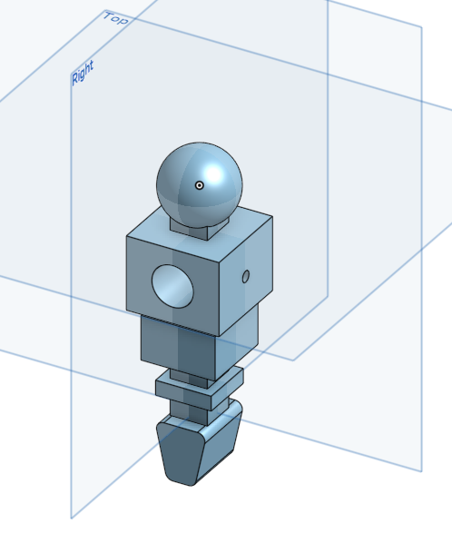
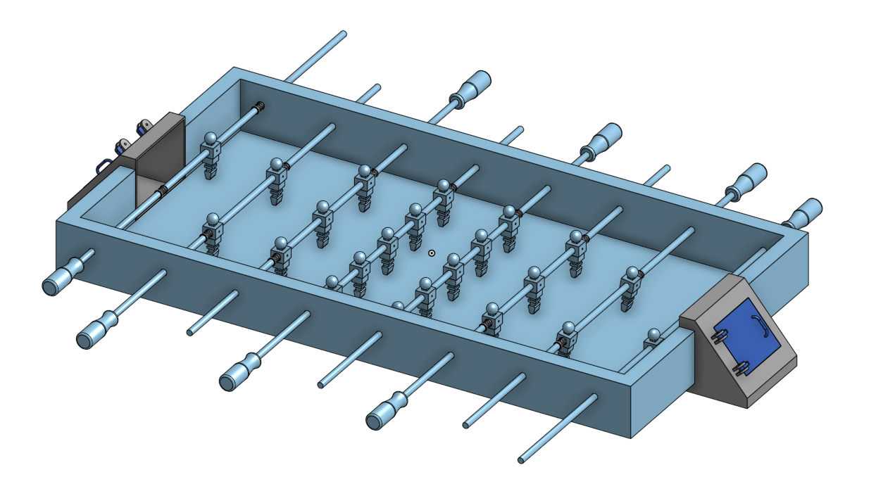

這個禮拜是第一次分組作業, 我被分配到的任務是畫手足球員
參考老師給的尺寸
http://mde.tw/cd2019/content/%E5%AF%A6%E7%BF%92%E4%BB%BB%E5%8B%99%E4%BA%8C.html
然後作稍為的微調
這是我畫的足球員

https://cad.onshape.com/documents/1bd73a7377db9cdd414172b8/w/324e3c900c47a65ea715f134/e/b11029a44b92b2093616ddc6
畫完後就讓繪製足球架的同學去加入到手足球系統裡面
最後跟小組完成的手足球
